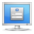
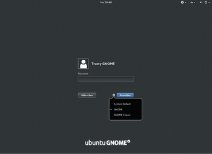
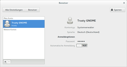
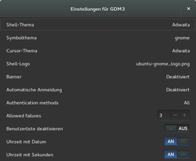

GDM
Dieser Artikel wurde für die folgenden Ubuntu-Versionen getestet:
Ubuntu 16.04 Xenial Xerus
Ubuntu 14.04 Trusty Tahr
Zum Verständnis dieses Artikels sind folgende Seiten hilfreich:

GDM  (GNOME Display Manager) kümmert sich bei GNOME um die grafische Anmeldung von Benutzern am System. GDM als Displaymanager bietet dem Nutzer die Möglichkeit, auch andere Desktop-Umgebungen wie Unity zu starten. Einst war GDM der Standard-Displaymanager, seit Ende 2011 wird bei Ubuntu standardmäßig LightDM eingesetzt. Einzig in der Variante Ubuntu GNOME ist GDM noch vorinstalliert. Es kann auf Wunsch aber auf jedem Ubuntu nachinstalliert werden.
(GNOME Display Manager) kümmert sich bei GNOME um die grafische Anmeldung von Benutzern am System. GDM als Displaymanager bietet dem Nutzer die Möglichkeit, auch andere Desktop-Umgebungen wie Unity zu starten. Einst war GDM der Standard-Displaymanager, seit Ende 2011 wird bei Ubuntu standardmäßig LightDM eingesetzt. Einzig in der Variante Ubuntu GNOME ist GDM noch vorinstalliert. Es kann auf Wunsch aber auf jedem Ubuntu nachinstalliert werden.
Dieser Artikel behandelt die Version 3.x von GDM (im Folgenden nur noch als GDM bezeichnet). Informationen über die Vorgängerversionen finden sich im Archiv (GDM Version 1.x, GDM Version 2.x).
Installation¶
|  |
| Ubuntu GNOME 14.04 |
Möchte man GDM nachinstallieren, kann dies über die offiziellen Paketquellen erfolgen[1]:
gdm (universe)
 mit apturl
mit apturl
Paketliste zum Kopieren:
sudo apt-get install gdm
sudo aptitude install gdm
Während der Installation im Terminal erscheint ein Dialog, indem GDM als neuer Displaymanager festgelegt werden kann. Wie man zwischen verschiedenen Displaymanager wechseln kann, ist im Übersichtsartikel Displaymanager beschrieben.
Konfiguration¶
GDM selbst bietet leider kein eigenes grafisches Werkzeug zur Konfiguration. Die meisten Einstellungen kann man in der Datei /etc/gdm/custom.conf einstellen, indem man sie mit Root-Rechten[2] bearbeitet[3]. Benötigt man unbedingt ein grafisches Programm, kann auf gdm3setup ausweichen.
/etc/gdm/custom.conf¶
Standardmäßig sieht die Datei folgendermaßen aus:
1 2 3 4 5 6 7 8 9 10 11 12 13 14 15 16 17 18 19 20 21 22 23 24 25 26 27 28 29 30 31 32 33 | # GDM configuration storage # # See /usr/share/gdm/gdm.schemas for a list of available options. [daemon] # Enabling automatic login # AutomaticLoginEnable = true # AutomaticLogin = user1 # Enabling timed login # TimedLoginEnable = true # TimedLogin = user1 # TimedLoginDelay = 10 # Reserving more VTs for test consoles (default is 7) # FirstVT = 9 [security] [xdmcp] [greeter] # Only include selected logins in the greeter # IncludeAll = false # Include = user1,user2 [chooser] [debug] # More verbose logs # Additionally lets the X server dump core if it crashes # Enable = true |
Automatische Anmeldung¶
Achtung!
Wer ein verschlüsseltes Benutzerverzeichnis verwendet, sollte auf eine automatische Anmeldung verzichten, weil dadurch der Aspekt der Daten-Sicherheit unterlaufen und die Funktionsweise erheblich beeinträchtigt wird.
Um die automatische Anmeldung bei GDM zu aktivieren, bearbeitet man einfach folgenden Abschnitt ein und ersetzt "user1" durch den gewünschten BENUTZERNAMEN:
1 2 3 4 | [daemon] # Enabling automatic login AutomaticLoginEnable = true AutomaticLogin = user1 |
Zeitversetzte automatische Anmeldung¶
Möchte man die Möglichkeit haben, trotz automatischer Anmeldung, sich als ein anderer Benutzer anmelden zu können, dann kann man die automatische Anmeldung zeitversetzt zu starten. Dazu kommentiert man folgendes ein und ersetzt "user1" wieder durch den gewünschten Benutzernamen:
1 2 3 4 5 6 7 8 9 | [daemon] # Enabling automatic login # AutomaticLoginEnable = true # AutomaticLogin = user1 # Enabling timed login TimedLoginEnable = true TimedLogin = user1 TimedLoginDelay = 10 |
Benutzer im Anmeldebildschirm verbergen¶
Der ursprünglich zum Definieren der im Anmeldebildschirm anzuzeigenden Nutzer gedachte Abschnitt [greeter] wird aktuell von gdm nicht mehr berücksichtigt. Ein Ausblenden von Benutzern vom Anmeldebildschirm ist damit auf diese im gdm-Referenzhandbuch noch beschriebene Weise nicht mehr möglich (Bugreports: 1171519 , Gnome 655075 ).
Alternativ dazu kann die Konfiguration von AccountsService genutzt werden, um Nutzer auf dem Anmeldebildschirm auszublenden. Dazu wird im Verzeichnis /var/lib/AccountsService/users/ eine Datei angelegt werden, deren Name exakt dem Namen des auszublendenden Users entspricht. Der Inhalt dieser Datei muss aus folgenden zwei Zeilen bestehen:
1 2 | [User] SystemAccount=true |
(Quelle: How do I hide a particular user from the login screen? )
Benutzerliste im Anmeldebildschirm ausblenden¶
Möchte man, dass keine Benutzername im Anmeldebildschirm angezeigt werden, dann muss man folgenden Befehl in der Konsole :
sudo gconftool-2 --config-source \ xml:readwrite:/etc/gconf/gconf.xml.defaults \ --direct --type bool --set \ /apps/gdm/simple-greeter/disable_user_list true
Wenn man sich das nächste Mal am System anmeldet, zeigt der Anmeldebildschirm nur noch ein Eingabefeld in der Mitte des Bildschirms an.
|  |
| GNOME Systemeinstellung - Benutzer |
GNOME Systemeinstellungen¶
Manche Einstellungen kann man auch direkt in den GNOME Systemeinstellungen vornehmen.
Automatische Anmeldung¶
Unter der Rubrik "Benutzer" kann man, nach der Entsperrung der Einstellungen, mit Hilfe eines Kippschalters die "Automatische Anmeldung" aktivieren.
Benutzerfoto¶
Des Weiteren kann in der Rubrik "Benutzer" mit einem Klick auf die Silhouette neben dem Namen das Benutzerfoto geändert werden. Eventuell bereits vorhandene Symbole sind im Ordner /usr/share/pixmaps/faces/ zu finden. Alternativ können einige Beispielbilder  heruntergeladen werden.
heruntergeladen werden.
Man kann das gewünschte Bild (ca. 128x128 Pixel reichen aus) auch kopieren und als ~/.face im Homeverzeichnis ablegen. Inwieweit andere Bildformate als JPG oder PNG unterstützt werden, ist nicht bekannt. Im Zweifelsfall sollte man ein Bild in eines dieser Formate konvertieren.
| Standard-Benutzerfoto |
Hintergrundbild wechseln¶
Das Hintergrundbild kann unter der Rubrik "Hintergrund → Bildschirm sperren" für den Sperrbildschirm geändert werden. Dabei ist zu beachten, dass nur das Hintergrund des Sperrbildschirms der GNOME Shell geändert wird. Der Hintergrund vom Anmeldebildschirm nach dem Hochfahren kann nicht verändert werden.
gdm3setup¶
|  |
| gdm3setup |
Es besteht die Möglichkeit, mit Hilfe des Programms gdm3setup einige Einstellungen auch grafisch vorzunehmen. Das Programm befindet sich leider nicht in den Paketquellen und ist auch nicht per PPA nachinstallierbar, sondern muss als Fremdpaket heruntergeladen und manuell installiert werden[4].
Von GitHub werden
folgende DEB-Pakete angeboten:
Die Pakete können für Ubuntu 14.04 heruntergeladen werden. Nachdem man sie für die korrekte Ubuntuversion und Architektur geladen hat, müssen DEB-Pakete noch installiert werden.
Hinweis!
Fremdpakete können das System gefährden.
Nach der Installation kann man das Programm über die Suchfunktion unter dem Namen "Einstellungen für GDM3" oder im Terminal durch den Befehl gdm3setup aufrufen. Folgende Einstellungen können mit Hilfe dieses Programms vorgenommen werden:
Shell-Themas
Symbolthema
Cursor-Thema
Shell-Logo
Banner
Automatische Anmeldung
Arten der Anmeldungen
Anzahl an möglicher fehlerhafter Passwortangaben
Deaktivierung der Benutzerliste
Anzeigen vom Datum und Sekunden bei der Uhr
Problembehebung¶
Nummernblock automatisch aktivieren¶
Oft kommt es vor, dass beim Anmeldebildschirm der Nummernblock aktiv ist, ohne dass die dazugehörige Anzeige an der Tastatur leuchtet. Falls der Nummernblock tatsächlich nicht direkt aktiv ist, dann findet man im Artikel Nummernblock aktivieren weitere Informationen, wie man diesen Umstand beheben kann.
GDM bei Dual-Monitor-Setup auf das richtige Display schieben¶
Bei einem Multi-Monitor-Setup wird das Login-Fenster nur noch auf einem Monitor angezeigt, oft aber auf dem falschen Display.
Besonders knifflig ist es, wenn man einen Laptop, dem einen eingebauten Monitor fehlt, mit einem externen Monitor betreibt. GDM definiert diesen fehlenden Monitor als Primären und "zeigt" auf dem sein Login-Fenster. Aber sogar in dieser Situation kann man sich blind anmelden (Enter-Taste drücken, das Passwort eintippen, Enter). Mit der Tastenkombination
Strg +
Alt +
T öffnet man ein Terminal-Fenster und stößt den Befehl gnome-control-center an. Im Kontrollzentrum kann man dann den primären Monitor definieren.
Über die graphische Desktopumgebung lässt sich nun aber der primäre Monitor für den Login-Bildschirm nicht bestimmen. Selbst wenn man für seinen Benutzer in den Monitor-Einstellungen alles richtig einrichtet, bleibt GDM dabei, das Login auf dem falschen Display anzuzeigen.
Dies lässt sich jedoch einfach beheben, indem man die Monitor-Konfiguration seines Benutzers dem GDM unterjubelt.
Man richtet dazu seine Monitore erst einmal ordentlich über die Gnome-Einstellungen ein (übers Menü oder durch gnome-control-center).
Danach kopiert man die für das Monitor-Setup verantwortliche Datei ~/.config/monitors.xml aus dem eigenen Homeverzeichnis ins Homeverzeichnis des Systembenutzers gdm nach /var/lib/gdm3/.config .
sudo cp ~/.config/monitors.xml /var/lib/gdm3/.config
Von dort wird das Monitor-Setup dann beim nächsten Login korrekt ausgelesen und GDM wandert automatisch auf den primären Bildschirm.
Sollte sich an dem Monitor-Setup einmal etwas verändern, dann kopiert man die aktualisierte Datei ~/.config/monitors.xml einfach erneut nach /var/lib/gdm3/.config .
Beenden und (Neu-)Starten von GDM samt XServer¶
Manchmal kommt es vor, dass man bestimmte Aufgaben ohne laufenden XServer bzw. auf der Konsole durchführen möchte. Mit den Tastenkombinationen Tasten Strg + Alt + F1 bis Strg + Alt + F6 kann man in sechs unabhängige Textkonsolen wechseln. Befindet man sich erstmal auf einer Textkonsole, reicht beispielsweise Alt + F2 , um zur zweiten Textkonsole zu wechseln. Zurück zur laufenden Sitzung / grafischen Anmeldung gelangt man mit Alt + F7 .
Von einer Textkonsole aus kann man GDM mitsamt Xserver wie folgt beenden, starten oder neu starten.
Hinweis:
Mit der Einführung von systemd ab Ubuntu 15.04 hat sich auch der Start eines Diplaymanagers geändert. Die folgenden Hinweise gelten daher nur für Ubuntu 14.10 oder älter.
| Aktion | Befehl |
| Beenden | sudo service gdm stop |
| Starten | sudo service gdm start |
| Neustarten | sudo service gdm restart |
Nach der Einführung von systemd ab Ubuntu 15.04 soll es dann so funktionieren:
| Aktion | Befehl |
| Status abfragen | sudo systemctl status gdm |
| Beenden | sudo systemctl stop gdm |
| Starten | sudo systemctl start gdm |
| Neustarten | sudo systemctl restart gdm |
Soll stop/start/restart doch nicht funktionieren (z. B. das Bild flackert endlos, momentan liegt ein Bug vor), soll dieser Trick Abhilfe schaffen:
sudo killall gdm-x-session
Dabei wird die aktuelle GDM-Session abgeschossen und neu gestartet.
Links¶
GDM
im GNOME-WikiMailingliste
- ArchivBugzilla
- Verbesserungsvorschläge oder Fehler melden (Anmeldung erforderlich)
Displaymanager
 Übersichtsartikel
Übersichtsartikel

- Erstellt mit Inyoka
-
 2004 – 2017 ubuntuusers.de • Einige Rechte vorbehalten
2004 – 2017 ubuntuusers.de • Einige Rechte vorbehalten
Lizenz • Kontakt • Datenschutz • Impressum • Serverstatus -
Serverhousing gespendet von